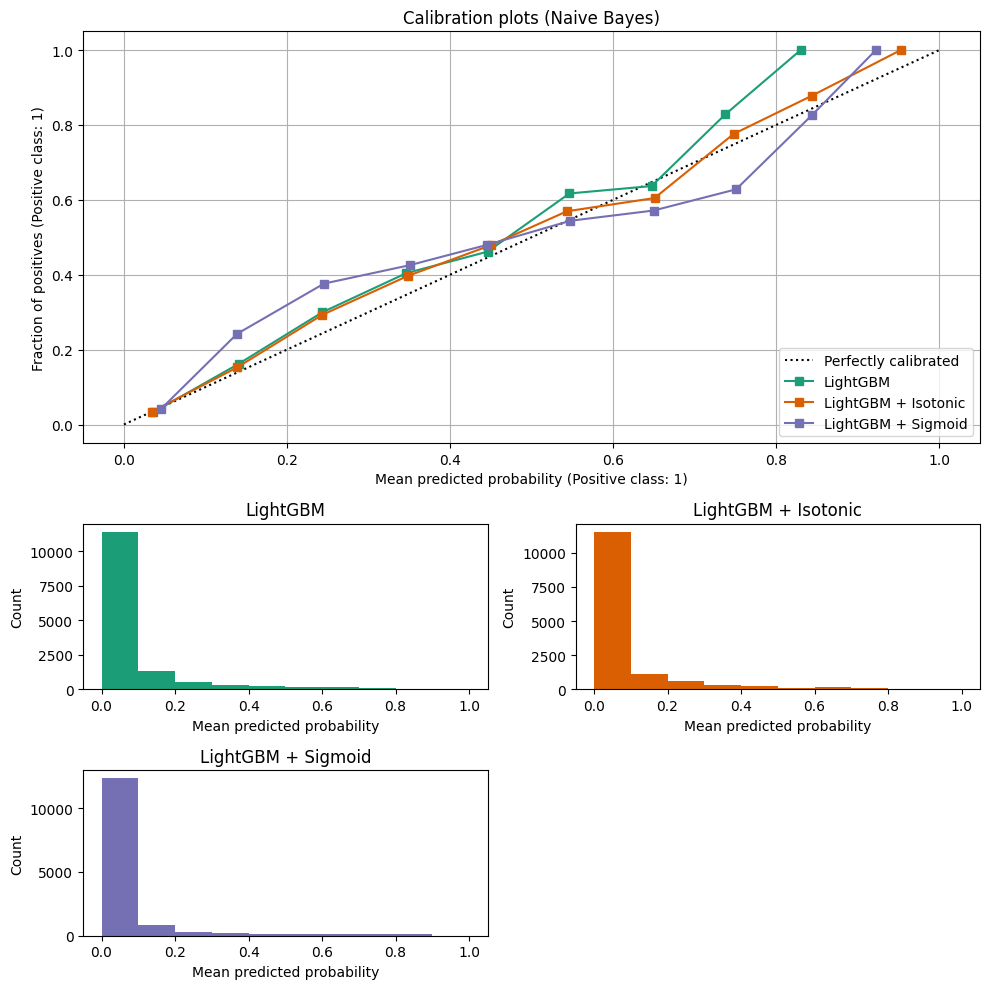

Blog & Case Studies
This section collects engineering deep-dives and empirical case studies exploring how PerpetualBooster eliminates hyperparameter optimization, accelerates continual training, improves uncertainty quantification, and drives optimal downstream decisions.
How PerpetualBooster Works
PerpetualBooster eliminates hyperparameter tuning by combining two internal control mechanisms controlled by a single budget parameter:
Step Size Control (Forward-Tracking Tree Search): Inspired by the Armijo–Goldstein condition in backtracking line search, Perpetual grows each tree until it achieves the smallest step that satisfies a target loss reduction proportional to \(\alpha = 10^{-\text{budget}}\).
Generalization Control: At each candidate split, samples are partitioned into internal training and validation folds. Splits are only accepted when the out-of-fold validation loss reduction keeps pace with the training loss reduction (\(\text{generalization} \geq 1.0\)).
For the full mathematical formulation and links to the Rust implementation, see PerpetualBooster Algorithm: How It Works in Architecture.
100x Faster Initial Training
Effective machine learning model training traditionally requires meticulous hyperparameter tuning (e.g., 100 trials with Optuna) to prevent overfitting. By replacing multi-trial tuning with a single training run governed by the budget parameter, PerpetualBooster achieves over 100x speed-ups compared to tuned LightGBM pipelines while matching state-of-the-art accuracy on tabular benchmarks.
California Housing (Regression)
On the California Housing dataset, LightGBM uses n_estimators (alongside Optuna hyperparameter search) to increase model capacity, whereas PerpetualBooster uses a single budget parameter. Across three accuracy tiers, PerpetualBooster exceeds tuned LightGBM speed by over 100x at equivalent test Mean Squared Error (MSE):
Perpetual budget |
LightGBM n_estimators |
Perpetual MSE |
LightGBM MSE |
Perpetual CPU Time (s) |
LightGBM CPU Time (s) |
Speed-up |
|---|---|---|---|---|---|---|
0.30 |
100 |
0.202 |
0.203 |
8.8 |
982 |
112x |
0.45 |
200 |
0.198 |
0.198 |
19.1 |
2,554 |
134x |
0.60 |
500 |
0.197 |
0.197 |
40.9 |
6,057 |
148x |
Forest Cover Types (Classification)
On the Forest Cover Types classification benchmark, PerpetualBooster achieves 76x faster execution speed compared to tuned LightGBM while maintaining equivalent log loss performance:
Perpetual budget |
LightGBM n_estimators |
Perpetual Log Loss |
LightGBM Log Loss |
Perpetual CPU Time (s) |
LightGBM CPU Time (s) |
Speed-up |
|---|---|---|---|---|---|---|
0.33 |
100 |
0.0886 |
0.0857 |
32.2 |
2,464 |
76x |
Better Prediction Intervals with Perpetual Learning
Uncertainty quantification via Conformalized Quantile Regression (CQR) provides rigorous prediction intervals with guaranteed coverage. Comparing PerpetualBooster against the CQR implementation in the open-source MAPIE package on the California Housing dataset (target coverage rate of 0.90) shows that both methods surpass the target coverage rate, while PerpetualBooster achieves a 35% reduction in average prediction interval width:
CQR Method |
Target Coverage |
Actual Coverage |
Prediction Interval Average Width |
|---|---|---|---|
MAPIE CQR |
0.900 |
0.905 |
2.222 |
Perpetual CQR |
0.900 |
0.907 |
1.450 |
See Calibration and Uncertainty Quantification for details on post-hoc calibration and native prediction interval methods (GRP, MinMax, WeightVariance, and Conformal).
Further Speed-Up with Continual Learning
Beyond fast initial training, PerpetualBooster supports continual learning (reset=False), reducing cumulative training complexity across streaming batches from quadratic \(O(n^2)\) to linear \(O(n)\).
On the California Housing dataset split into 24 batches (initial fit on the first 12 batches of 10,320 rows, followed by 11 incremental batches of 860 rows each), continual learning maintains the same average test MSE (0.197) as retraining from scratch while progressively increasing cumulative speed-up from 1.0x to 2.6x by batch 11.
See Continual Learning for the full batch-by-batch benchmark table and code examples.
Optimum Business Decisioning with Calibrated Probabilities
In quantitative decision-making, the value of a model is determined not only by discrimination metrics (such as AUC or F1-score) but by how effectively its predicted probabilities translate into an optimal action that maximizes expected utility.
Financial Decision Framework (Loan Default Case Study)
Using the publicly available TVS_Loan_Default dataset from OpenML (Data ID: 43743), we define a business objective function that computes expected lending profit across candidate approval thresholds given Interest Rate (0.12), Exposure at Default (EAD) ($10,000), Cost Rate (0.045), and Loss Given Default (LGD) (0.70):
import numpy as np
def business_objective(y_true, y_pred, threshold):
interest_rate = 0.12
# Approve loans where predicted default probability is below the threshold
loan_status = y_true[y_pred < threshold]
ead = 10000 # Exposure at Default
capital = ead * len(loan_status) # Total capital for normalization
revenue = len(loan_status) * ead * interest_rate
cost_rate = 0.045 # Cost percentage of EAD for each approved loan
cost = len(loan_status) * ead * cost_rate
lgd = 0.7 # Loss Given Default
loss = np.sum(loan_status) * ead * lgd
profit = revenue - cost - loss
margin = (profit / capital) * 100 # Normalize by total exposure
return profit, margin
Probability Calibration Baseline
Before optimizing the decision threshold, predicted probabilities must be well-calibrated (e.g., a predicted probability of 0.10 must correspond to a 10% observed default rate). Using scikit-learn’s CalibratedClassifierCV on a tuned LightGBM baseline:


Calibration plots for uncalibrated LightGBM, LightGBM + Isotonic, and LightGBM + Sigmoid, illustrating the alignment between predicted probabilities and observed default frequencies.
Model Variant |
Expected Calibration Error (ECE) |
|---|---|
Baseline LightGBM |
0.01021 |
LightGBM + Isotonic |
0.00622 |
LightGBM + Sigmoid |
0.01569 |
Empirical Profit Comparison
Selecting the decision threshold on an independent validation set to maximize business_objective and evaluating on the reserved test set:
Calibrated LightGBM (Isotonic): Optimal threshold of
0.104, yielding a total expected profit of $5,912,750.PerpetualBooster + Calibration & Threshold Optimization: Yields a total expected profit of $5,988,250—a 1.3% increase in expected financial return ($75,500 higher profit on the test cohort) over the calibrated LightGBM baseline.
Profit-Driven Lead Scoring
Traditional classification pipelines optimize statistical metrics without accounting for asymmetric business costs and benefits. By incorporating explicit financial payoffs into threshold selection on calibrated PerpetualBooster probabilities, marketing campaigns can directly maximize net profit.
Financial Payoff Matrix (Bank Marketing Case Study)
On the UCI Bank Marketing dataset, we evaluate campaign profit using the following per-lead financial parameters:
Outcome |
Value ($) |
Description |
|---|---|---|
True Positive (TP) |
+$1,000 |
Financial gain from a successful conversion (Good Lead → Customer). |
False Positive (FP) |
-$100 |
Cost of sales time wasted on a non-converting lead (Bad Lead → Sales Effort). |
False Negative (FN) |
-$500 |
Opportunity cost of a missed conversion (Good Lead → No Sales Effort). |
Campaign Profit Results
LightGBM + CalibratedClassifierCV: Achieves a total campaign profit of $733,200.
PerpetualBooster: Delivers a total campaign profit of $740,600—a 1.0% increase in net campaign profitability on the same objective.